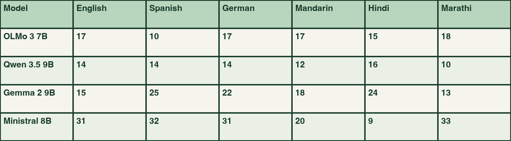
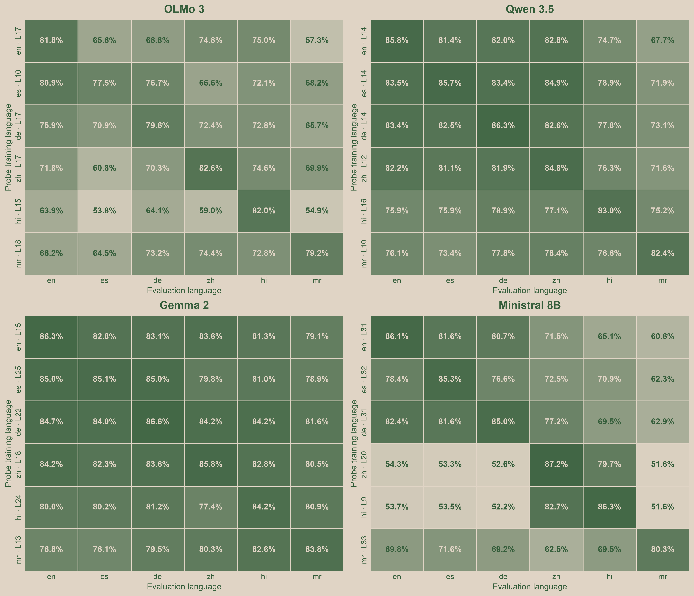
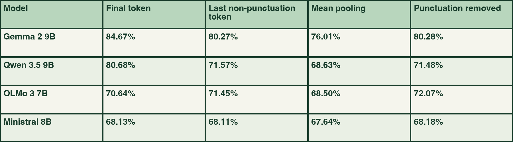
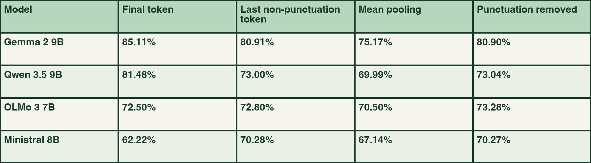

Testing cross-language transfer across six languages, four models, and eight activation-extraction methods
I used AI tools to help draft and edit this article. The dataset statements and translations were also generated using an LLM, as described below.
I set out to study how different model families represent political positions across languages, and whether a classifier trained on one language would continue to work in another.
I am new to interpretability research, and I wanted to begin with a question that was small, relatively unexplored on LessWrong, and familiar to me. I decided to test whether opposing responses to political survey questions could be decoded from model activations across languages, and whether the same probes would hold cross-lingually.
Consider two statements:
A classifier can learn to separate these opposing responses using vectors from a model’s residual stream. But what happens when the statements are translated into German, Spanish, Mandarin Chinese, Hindi, and Marathi? If we train a classifier in one language and apply it unchanged in another, does it still work?
If the classifier still worked in another language, one possible explanation would be that the model represents the distinction between opposing political statements similarly across languages. But there are simpler explanations. The classifier might be picking up patterns created by translation, sentence structure, punctuation, or the way each language is split into tokens.
So I narrowed the question down to:
If a linear classifier learns to separate opposing political statements in one language, can it make the same distinction in another language without being retrained?
I tested this across six languages and four models. Mean cross-language accuracy ranged from roughly 62% to 85% across all extraction conditions discussed later. But these scores changed depending on how we read the model’s activations. Using the final token, averaging all tokens, removing punctuation, or rescaling every vector to the same length affected each model differently.
I started with the Anthropic/llm_global_opinions dataset on Hugging Face. It contains 2,556 questions drawn from the Pew Global Attitudes Survey and the World Values Survey.
The original dataset contains questions and response options, but I needed standalone statements with polarity labels. I processed every question using gemini-3.5-flash-lite, converting suitable response options into short declarative statements expressing opposing policy positions.
I excluded questions that asked for factual predictions, ratings of politicians or parties, vague feelings or perceptions, or responses without clear opposing policy positions. This left 580 suitable questions: 494 with paired responses and 86 with a substantive neutral response.
For each retained question, the two opposing statements received labels +1 and −1. The generation prompt did not specify a consistent political direction across questions: these labels do not define a shared left/right axis. A 0 label was included only when the original question provided an explicit middle or neutral response.
This produced 1,246 English statements:
+1−10I retained the neutral statements in the dataset, but the probe experiments used only the +1 and −1 statements.
I then processed the English statements with the same Gemini model to produce versions in Spanish(es), German(de), Simplified Mandarin Chinese (zh), Hindi(hi), and Marathi(mr), giving me six languages including English. The translation process was designed to preserve the meaning, polarity, scope, and strength of each statement.
The derived dataset is available under the original license here.
All sentences and translations were manually reviewed with my limited language familiarity of English, German, Hindi and Marathi. Independent fluent speaker review, especially for Spanish and Mandarin, remains to be done.
I started by extracting the final non-padding token’s residual-stream vector at every transformer layer. I then trained a logistic-regression probe to predict whether each statement had positive or negative polarity.
I evaluated the probe using grouped five-fold cross-validation , grouped by question ID to keep opposing statements from the same question in the same fold.
The best English-language results were:
The peak occurred at a different layer for each model. In every case, the final layer performed worse than the best-performing layer.
This does not tell me when the model formed the distinction captured by the probe. It also does not show that later layers erased political information. It only identifies where this particular linear probe achieved its highest accuracy.
The first analysis identified where polarity was most readable in English, but that layer was not necessarily preferred by every other language. Before testing transfer, I therefore repeated the layer sweep for all 6 languages in each model.
The preferred layer varied substantially in some models. For example, Ministral peaked at Layer 9 for Hindi, Layer 20 for Mandarin, and Layers 31–33 for the remaining languages. Gemma’s language-specific peaks ranged from Layer 13 for Marathi to Layer 25 for Spanish.

These preferred layers come from the multilingual sweep. They can differ from the earlier English-only results because the two analyses used different cross-validation procedures. For example, Qwen’s English-only sweep tied at Layers 12–13, while its English result in the multilingual sweep peaked at Layer 14.
Rather than using the preferred English layer for every source language, I trained each probe at that language’s preferred layer. I then applied it unchanged to all six languages in the same model.
The heatmap below shows the resulting accuracies. The y-axes show the language and layer used to train each probe, while the x-axes show the languages on which the probes were evaluated

On average, all four models transfer well above the 50% random chance baseline, but cross-lingual linear decodability varies substantially across architectures. Gemma 2 and Qwen 3.5 maintain a high transfer accuracy across all languages (averaging ~81.6% and ~78.3% respectively), whereas OLMo 3 (~68.6%) and Ministral 8B (~67.4%) experience a much steeper drop off compared to the diagonal.
There is also clear directional asymmetry. In Ministral, a probe trained on Spanish at Layer 32 reaches 70.9% on Hindi statements, but a probe trained on Hindi at Layer 9 reaches only 53.5% when evaluated on Spanish statements.
To check whether the transfer result depended on one particular layer, I repeated the full 6 × 6 transfer matrix at every unique language-specific peak. For Gemma, I tested the six multilingual peak layers plus Layer 23 from the earlier English-only sweep: seven layers in total (13, 15, 18, 22, 23, 24, and 25).
Layer choice changed the exact scores but not the broad ordering between models. Gemma’s mean cross-language accuracy ranged from 80.0% to 82.3%, while Qwen ranged from 77.0% to 78.4%. OLMo was more sensitive, ranging from 65.1% to 68.9%, as was Ministral, which ranged from 63.0% to 67.8%.
After observing these transfer scores, I wanted to stress-test my core assumptions. What if anchoring the evaluation entirely on the final token was misleading? What if the probe was simply looking at the final punctuation and making a decision instead of the broader semantics?
The issues with only auditing the final token are:
., Hindi ।, Chinese 。). Is the probe reading political stance, or memorising punctuation-related token features?To test this, I compared eight ways of extracting an activation. I used the final token, the last non-punctuation token, the mean across all content tokens, or the final token after removing punctuation from the end of the sentence. For each method, I tested both the raw residual-stream vector and an L2-normalised version.
Changing the extraction method and layer at the same time would make the results difficult to interpret. I therefore fixed one reference layer for each model: Layer 17 for OLMo, Layer 12 for Qwen, Layer 23 for Gemma, and Layer 31 for Ministral. This is a separate comparison from the earlier heatmap, where each source language used its own preferred layer.
I used the English-only peak layers as fixed reference points. For Qwen, Layers 12 and 13 tied, so I selected Layer 12 using an earliest-layer tie rule. These are reference points for comparing extraction methods, not universally optimal layers.


All values above are mean cross-language accuracy (excludes the in-language diagonal)
As you can see, changing how activations are extracted from the residual stream changes the probes’ cross-language accuracy. However, average accuracy remains above random chance for every model under all eight extraction conditions.
Gemma and Qwen performed best with the final-token extraction. Averaging the content-token vectors reduced accuracy by 8.7 and 12.1 percentage points, respectively. Stripping punctuation from the end of each sentence reduced accuracy by 4.4 points for Gemma and 9.2 points for Qwen.
OLMo improved after stripping punctuation by 1.4 points and after L2-normalising the final-token vector by 1.9 points. Its best condition, stripped_l2, was 2.6 points above its baseline. In contrast, normalising Ministral’s final-token vector reduced transfer by 5.9 points. This suggests that no single extraction method works best across all four models.
The controls help me understand what the probes are using to make their decisions. Are they truly separating the statements based on political stance, or are they picking up word or sentence-level patterns that happen to track the labels? Since the statements were generated, they may contain recurring patterns or structures that I missed. I used these controls to test some of these possible shortcuts. L2 normalisation tests whether vector length matters, mean pooling checks whether the result depends on the final token, and the other extraction methods test the effects of token choice and punctuation. Strong transfer alone does not justify saying that the probes have identified political stance.
The eight extraction methods test where the signal sits inside the models’ activations, but they don’t check whether the raw text itself contains any shortcuts. To test the text itself, I trained character 3–5-gram TF-IDF classifiers separately for each language and used logistic regression for classification. I evaluated them using question-grouped five-fold cross-validation.
The character n-gram models had an average within-language accuracy of 81.42% (English 83.6%, Hindi 83.3%, Marathi 81.6%, German 80.8%, Spanish 79.7%, and Mandarin 79.7%). Upon cross-language testing of these models the average dropped to 51.67%, basically random chance. It only showed slight transfer between related languages. English and Spanish scored between 61% and 63%, while Marathi and Hindi scored between 59% and 61%. Between completely different scripts like English to Mandarin or Hindi, the scores were a flat 50%.
The activation probes averaged 62.22% to 85.11% across all directed cross-language pairs under the tested extraction conditions, compared with 51.67% for the character baseline. Direct character overlap did not reproduce the activation-transfer results. This range is not a separate average restricted to different-script pairs, and this control does not rule out other linguistic shortcuts.
Ruling out character overlap doesn't prove the probes are catching actual political beliefs. The models could just have strong multilingual alignment across the board, or the translations from Gemini might share repeated semantic patterns. The next natural test is using off-the-shelf sentence embeddings to set a stronger baseline.
For these generated statements and evaluation procedures, linear probes trained in one language predicted the dataset’s opposing-statement labels in other languages. Gemma and Qwen had higher mean transfer accuracy than OLMo and Ministral in the reported comparisons. Extraction method materially affected those scores.